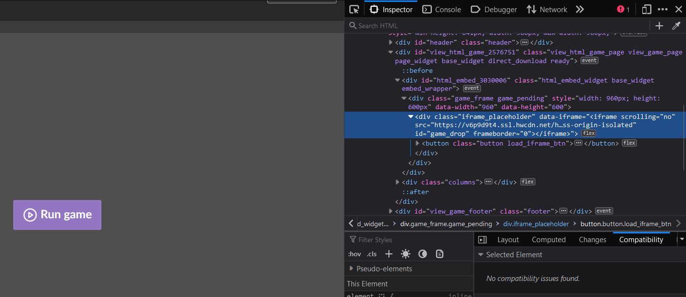

How to download HTML Games from itch.io
These dinguses don't submit their games as an easily downloadable .ZIP sometimes. And that's okay. There's really only one thing to be done.
Step One: Install wget
I'd just look up how to do it if you don't have it. There are a few different ways to install.
For windows though, you could try installing with chocolatey:
https://chocolatey.org/install
Then just run choco install wget.
Don't trust wget on Windows Powershell unless you KNOW you've installed it. Microsoft just aliases wget to be Invoke-WebRequest, which doesn't have the functionality we're looking for.
So for chocolatey, you should be able to run C:\ProgramData\chocolatey\lib\Wget\tools\wget.exe from powershell once installed.
Step Two: Go to the game's itch page
We'll use my Unity game with a web build as an example: (https://ambiguousname.itch.io/lights-camera-competence).
Right click the "Run Game" button and "Inspect" or "Inspect Element" (depending on your browser). Above the button element you should see the "iframe placeholder" element.
Now look for the URL that contains ssl.hwcdn.net (for Unity games. itch.zone is also a possibility), usually under data-iframe or iframe.
Copy it, and now type the following command:
wget --page-requisites URLHERE
So in that case, for my game it'd be:
C:\ProgramData\chocolatey\lib\Wget\tools\wget.exe --page-requisites https://v6p9d9t4.ssl.hwcdn.net/html/4076998/index.html
If you get something like "OpenSSL failed", that means you've probably downloaded an old version of wget, and you'll need a newer one (for Windows, Chocolatey had the latest version for me. Any modern package manager should do the trick for you)
But there will be some files missing for EITHER Unity or Godot (or anything that runs on web assembly and/or has a loading bar), so you'll have to do the following:
Step Three (Unity)
Unity doesn't automatically define its Javascript files for its pre-requisistes, so make sure you do:
wget --page-requisites URLHERE/Build/WebGL.wasm
wget --page-requisites URLHERE/Build/WebGL.loader.js
wget --page-requisites URLHERE/Build/WebGL.framework.js
(We include --page-requisites to place it in the same oflder as your other files)
So for our example:
C:\ProgramData\chocolatey\lib\Wget\tools\wget.exe --page-requisites https://v6p9d9t4.ssl.hwcdn.net/html/4076998/Build/WebGL.wasm
C:\ProgramData\chocolatey\lib\Wget\tools\wget.exe --page-requisites https://v6p9d9t4.ssl.hwcdn.net/html/4076998/Build/WebGL.loader.js
C:\ProgramData\chocolatey\lib\Wget\tools\wget.exe --page-requisites https://v6p9d9t4.ssl.hwcdn.net/html/4076998/Build/WebGL.framework.js
Step Three (Godot)
wget --page-requisites URLHERE/GameName.wasm
wget --page-requisites URLHERE/GameName.pck
So for something like TacoChess (https://game-design-art-collab.itch.io/tacochess):
wget --page-requisites https://html.itch.zone/html/7626690/index.html
wget --page-requisites https://html.itch.zone/html/7626690/TacoChess.wasm
wget --page-requisites https://html.itch.zone/html/7626690/TacoChess.pck
There may be .side.wasm? Maybe? I don't know. You literally can't know unless you know what the compiled game looked like
Step Four (It's Still Broken)
Well, bully for you. Ask your jammers to provide you with an actual .zip file, because you're going to be stuck in troubleshooting hell otherwise. Why do this to yourself?